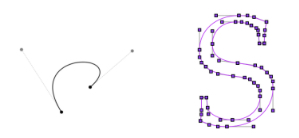
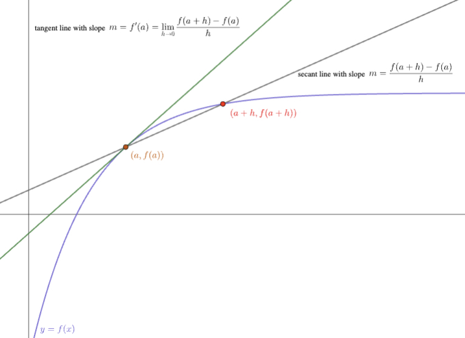
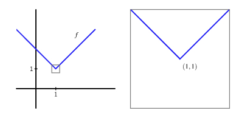
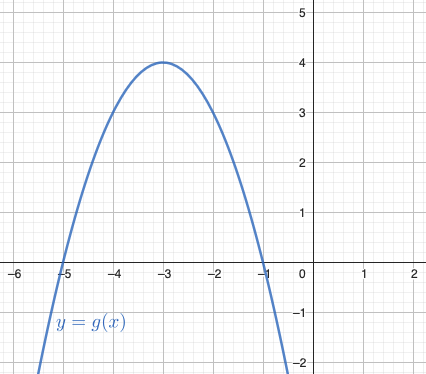
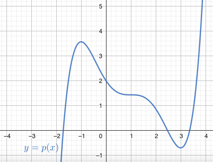
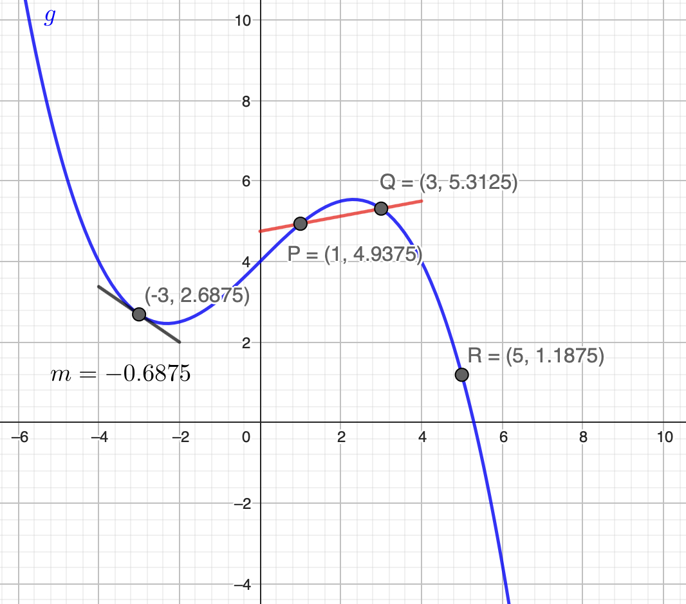
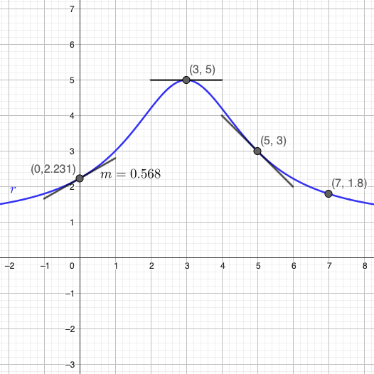

In the activities that follow, we begin studying the derivative of a function at a particular input value. The derivative is important because it measures the instantaneous rate of change of one quantity with respect to another. For example, in automobiles with camera detection systems and automatic braking, these systems have to measure the instantaneous rate at which the distance is changing between the car and the vehicle ahead of it.

Figure1.3.1.Car camera systems measure the instantaneous rates of change of the distance to other moving objects. Bezier curves use tangent lines to control how multiple curves are pieced together to generate useful shapes, such as letters in different fonts. Explore more with this interactive website 1
gvsu.edu/s/0zC
.
The derivative also measures the slope of the line tangent to a smooth curve. The tangent line is important in graphical applications such as the design of fonts using Bezier curves, which use tangent lines to control how curves are pieced together to generate visually appealing letters and figures.
Subsection1.3.1Before Class
Exploration1.3.1.
This beginning activity introduces the limit definition of the derivative using an animation with embedded questions. A draft of the text and images can be found in this Google document 2
provided this limit exists. The value of \(f'(a)\) measures the slope of the tangent line to \(y = f(x)\) at the point \((a, f(a))\) and is also the instantaneous rate of change of \(f\) with respect to \(x\) at the instant \(x = a\text{.}\)
The quantity \(\frac{f(a+h)-f(a)}{h}\) is often called the difference quotient, and this quantity measures the average rate of change of \(f\) on the interval \([a, a+h]\text{.}\)
Exploration1.3.2.
This worked example demonstrates how to apply the limit definition of the derivative to a quadratic function. A draft of the text and images can be found in these Google slides 3
Take the limit as \(h \to 0\) to find \(f'(2) = -3\)
Exploration1.3.3.
This guided example leads students to apply the limit definition of the derivative to a rational function. A draft of the text and images for the animation/video can be found in this Google document 4
That’s incorrect. When there is a sum in the denominator, the fraction can’t be separated: \(\frac{1}{2+h} \ne \frac{1}{2} + \frac{1}{h}\text{.}\)
\(f(3+h) = \frac{1}{2} + \frac{1}{h-1}\)
That’s incorrect; try evaluating \(f(x)\) using \(x = 3+h\text{.}\)
Hint1.
Since \(f(x) = \frac{1}{x-1}\text{,}\) this gives a rule for whatever is substituted for \(x\text{.}\) For example, \(f(\Box) = \frac{1}{\Box - 1}\text{.}\)
Hint2.
\(f(3+h) = \frac{1}{(3+h)-1}\)
Checkpoint1.3.8.Q3: finding a common denominator.
To subtract the fractions \(\frac{1}{2+h}\) and \(\frac{1}{2}\text{,}\) the needed common denominator is
\(2+h\)
That’s incorrect.
\(4+h\)
That’s incorrect.
\((2+h) \cdot 2\)
That’s correct. The product of the two denominators provides a common denominator to subtract the fraction.
\(4+4h\)
That’s incorrect.
Hint1.
For example, to subtract \(\frac{1}{3} - \frac{1}{5}\text{,}\) the common denominator is \(3 \cdot 5 = 15\text{:}\)\(\frac{1}{3} - \frac{1}{5} = \frac{1}{3}\cdot\frac{5}{5} - \frac{1}{5}\cdot\frac{3}{3} = \frac{3 - 5}{15} = \frac{2}{15}\text{.}\)
Hint2.
Consider the product of the denominators of the two fractions to subtract.
Checkpoint1.3.9.Q4: simplifying the numerator of the difference quotient.
The quantity \(2 - (2+h)\) simplifies to
\(h\)
That’s incorrect.
\(0\)
That’s incorrect.
\(2\)
That’s incorrect.
\(-h\)
That’s correct.
Hint.
When subtracting a quantity in parentheses, remember to distribute the minus sign.
Checkpoint1.3.10.Q5: evaluating the limit.
Evaluating the limit as \(h \to 0\) in \(f'(3) = \displaystyle \lim_{h \to 0} \frac{-1}{(2+h) \cdot 2}\) shows that
\(f'(3) = -\frac{1}{4}\)
That’s correct.
\(f'(3) = \frac{1}{4}\)
That’s incorrect.
\(f'(3) = -\frac{1}{2}\)
That’s incorrect.
\(f'(3) = 0\)
That’s incorrect.
Hint.
When subtracting a quantity in parentheses, remember to distribute the minus sign.
For the function \(f(x) = \frac{1}{x-1}\text{,}\) the limit definition of the derivative shows that \(f'(3)=-\frac{1}{4}\text{,}\) which is the slope of the tangent line to \(y = f(x)\) at the point \((3, f(3)) = (3, \frac{1}{2})\text{.}\) The fact that \(f'(3)=-\frac{1}{4}\) also shows that at the instant \(x = 3\text{,}\) the function \(y = f(x)\) is decreasing at an instantaneous rate of \(-\frac{1}{4}\) units of height per \(1\) unit of change in \(x\text{.}\)
Discussion and summary of ideas from before-class work:
On the graph of a function \(y = f(x)\text{,}\) the line between the points \((a, f(a))\) and \((b, f(b))\) is called a secant line, and the slope of the secant line is the same as the average rate of change of the function from \(x = a\) to \(x = b\text{,}\)
provided this limit exists. The value of \(f'(a)\) measures the slope of the tangent line to \(y = f(x)\) at the point \((a, f(a))\) and is also the instantaneous rate of change of \(f\) with respect to \(x\) at the instant \(x = a\text{.}\)
The quantity \(\frac{f(a+h)-f(a)}{h}\) is often called the difference quotient, and this quantity measures the average rate of change of \(f\) on the interval \([a, a+h]\text{.}\)

Figure1.3.12.The slope of the tangent line and the slope of a secant line to \(y = f(x)\) at the point \(x = a\)
A key algebraic step in applying the limit definition is evaluating \(f(a+h)\text{.}\) For example, in Exploration 1.3.2 where \(f(x)=x-x^2\text{,}\)\(f(2+h) = (2+h)-(2+h)^2=-h^2-3h-2\text{,}\) and in Exploration 1.3.3 where \(f(x) = \frac{1}{x-1}\text{,}\)\(f(3+h) = \frac{1}{3+h-1} = \frac{1}{2+h}\text{.}\)
Activity1.3.4.
Consider the function \(f\) whose formula is \(f(x)=3-2x\text{.}\)
Notice that \(f\) is a linear function. What is the slope of \(f\) at every value of \(x\text{?}\)
Compute the average rate of change of \(f\) on the intervals \([1,4]\text{,}\)\([3,7]\text{,}\) and \([5, 5+h]\text{.}\) Simplify each result as much as possible. What do you notice about these quantities?
Use the limit definition of the derivative to compute the instantaneous rate of change of \(f\) at the point where \(a = 1\text{.}\) That is, use the limit definition of the derivative to compute \(f'(1)\text{.}\) Why does this result make sense in light of earlier questions?
Without doing any additional computations, what are \(f'(2)\text{,}\)\(f'(\pi)\text{,}\)\(f'(-13)\text{?}\) Write a couple of sentences that explain how you know the answers without doing computations, making use of the phrases/terms “average rate of change”, “instantaneous rate of change”, “derivative”, “slope” and “linear function”.
Peer Instruction questions as an alternative to Activity 1.3.4.
Checkpoint1.3.13.Peer Instruction Question 1: the difference quotient of a linear function.
Consider a function \(y = f(x)\text{.}\) Which of the following statements is true about the quantity \(\frac{f(5+h)-f(5)}{h}\text{?}\)
\(\frac{f(5+h)-f(5)}{h} = -2\text{,}\) for \(f(x) = 3 - 2x\)
That’s correct.
\(\frac{f(5+h)-f(5)}{h} = h\text{,}\) for \(f(x) = 3 - 2x\)
That’s incorrect.
Checkpoint1.3.14.Peer Instruction Question 2: rates of change of a linear function.
Let \(f(x) = 3 - 2x\text{.}\) Consider the following statements.
The average rate of change of \(f\) on the interval \([1,4]\) is \(-2\text{.}\)
The slope of the secant line between the points \((1,f(1))\) and \((4,f(4))\) is \(-2\text{.}\)
The instantaneous rate of change of \(f\) at \(a = 1\) is \(-2\text{.}\)
\(f'(1)=-2\text{.}\)
Which of the following statements is true?
Only (2) is true.
That’s incorrect.
Only (1) and (2) are true.
That’s incorrect.
Only (3) and (4) are true.
That’s incorrect.
All of (1), (2), (3), and (4) are true.
That’s correct.
Summary of important ideas regarding linear functions.
Every linear function has a constant average rate of change on any possible interval. For example, \(f(x)=-3x+5\) is a linear function with slope \(-3\text{,}\) and the average rate of change of \(f\) on any interval is \(-3\text{.}\) The instantaneous rate of change of \(f\) at any input value will therefore also be \(-3\text{,}\) since the instantaneous rate of change is the limit of average rates of change.
More generally, for any linear function of form \(f(x) = mx + b\text{,}\)\(f'(a) = m\) for any choice of \(a\text{.}\) Said differently, the value of the derivative of any linear function at any chosen input is the slope of the line.
Activity1.3.5.
Let \(g(x) = |x|\text{.}\) Recall that if \(x \ge 0\text{,}\) then \(|x| = x\text{,}\) and if \(x \lt 0\text{,}\) then \(|x| = -x\text{.}\)
Determine \(g'(3)\) and \(g'(5)\text{.}\)
Determine \(g'(-2)\) and \(g'(-6)\text{.}\)
For \(g(x) = |x|\text{,}\) the limit definition of the derivative shows that
If \(h\) is a small positive number, what is the value of \(\frac{|h|}{h}\text{?}\) If \(h\) is a small negative number, what is the value of \(\frac{|h|}{h}\text{?}\)
Explain why \(\displaystyle \lim_{h \to 0} \frac{|h|}{h}\) does not exist.
Use a graphing tool such as Desmos to plot \(g(x)=|x|\text{,}\) and zoom in on the point where \(x = 0\text{.}\) Explain why it makes sense that \(g'(0)\) does not exist.
Peer instruction questions as an alternative to Activity 1.3.5.
Checkpoint1.3.15.Peer Instruction Question 3: the derivative of \(g(x) = |x|\) at different values.
Let \(g(x) = |x|\text{.}\) Recall that if \(x \ge 0\text{,}\) then \(|x| = x\text{,}\) and if \(x \lt 0\text{,}\) then \(|x| = -x\text{.}\) Consider the following statements.
\(g'(-3) = -1\) and \(g'(4) = 1\)
\(g'(-2) = 1\) and \(g'(5) = -1\)
If \(a \lt 0\text{,}\) then \(g'(a) = -1\text{,}\) and if \(a \gt 0\text{,}\) then \(g'(a) = 1\)
If \(a \gt 0\text{,}\) then \(g'(a) = -1\text{,}\) and if \(a \lt 0\text{,}\) then \(g'(a) = 1\)
Only (1) is true
That’s incorrect.
Only (1) and (3) are true
That’s correct.
None of (1), (2), (3), or (4) are true.
That’s incorrect.
Only (2) and (4) are true
That’s incorrect.
Checkpoint1.3.16.Peer Instruction Question 4: the derivative of \(g(x)=|x|\) at \(x = 0\).
For \(g(x) = |x|\text{,}\) the limit definition of the derivative shows that
\(\displaystyle g'(0) = \lim_{h \to 0} \frac{|h|}{h}\) does not exist
That’s correct.
Summary of important ideas regarding the derivative of the absolute value function.
Not every function has a derivative at every point. For example, if \(g(x)=|x|\text{,}\) then \(g'(0)\) does not exist.
One reason that \(g'(0)\) does not exist is that when we zoom in on the point \((0,0)\) on the graph of \(y=g(x)\text{,}\) there is a sharp corner on the graph at which the function’s slope “jumps” from \(-1\) to the left of \(x=0\) to \(+1\) to the right of \(x = 0\text{.}\) Here is a graph of a similar function where a sharp corner appears at the point \((1,1)\text{.}\)

Figure1.3.17.A function whose derivative fails to exist at \(x = 1\text{.}\) (Image borrowed from Active Calculus.)
Activity1.3.6.
Let \(f(x) = -2x^2 + 3x - 4\text{.}\) Use the limit definition of the derivative to determine \(f'(1)\text{.}\)
Let \(g(x) = x^3\text{.}\) Use the limit definition of the derivative to determine the slope of the tangent line to \(y = g(x)\) at the point \((-1,-1)\text{.}\) Hint 5
\(g(-1+h) = (-1+h)^3 = -1 + 3h - 3h^2 + h^3\)
.
Let \(r(x) = \frac{2}{x+3}\text{.}\) Use the limit definition of the derivative to determine the instantaneous rate of change of \(r\) at the instant \(x = 0\text{.}\)
Let \(p(x) = 2^x\text{.}\) The limit definition of the derivative shows that
Notice that there is no algebra that can be done to remove a factor of \(h\) from the numerator, so this limit can’t be evaluated exactly. Use small values of \(h\) to find an estimate of \(p'(0)\) that is accurate to within \(0.001\text{.}\) Then, plot \(p(x)=2^x\) and its tangent line at \((0,1)\) to confirm that the estimate of \(p'(0)\) is reasonable.
Let \(f(x) = \sqrt{x+1}\text{.}\) Use the limit definition of the derivative to determine \(f'(3)\text{.}\) Hint 6
To simplify the difference quotient, a helpful step is to multiply the numerator by \(\frac{\sqrt{4+h}+2}{\sqrt{4+h}+2}\)
.
Peer Instruction questions as an alternative to Activity 1.3.6.
Checkpoint1.3.18.Peer Instruction Question 5: applying the limit definition to a quadratic function.
Let \(f(x)=-2x^2 + 3x - 4\text{.}\) Write down all of the steps required to apply the limit definition of the derivative to determine \(f'(1)\text{.}\) [Nothing else appears on the screen until the instructor presses “NEXT”.]
Consider the following statements that correspond to the process of applying the limit definition of the derivative:
\(\displaystyle \frac{f(1+h)-f(1)}{h} = -2h-1\)
\(\displaystyle \lim_{h \to 0} f(1+h)-f(1) = -1\)
\(\displaystyle \frac{f(1+h)-f(1)}{h} = -2h-1\)
\(\displaystyle f'(1)=-2\)
Which of the following statements is true?
Only (1).
That’s incorrect.
Only (4).
That’s incorrect.
(1) and (3)
That’s correct.
(2) and (4)
That’s incorrect.
Checkpoint1.3.19.Peer Instruction Question 6: applying the limit definition to a rational function.
Let \(r(x)=\frac{1}{5-x}\text{.}\) Write down all of the steps required to apply the limit definition of the derivative to determine \(r'(2)\text{.}\) [Nothing else appears on the screen until the instructor presses “NEXT”.]
Consider the following statements that correspond to the process of applying the limit definition of the derivative:
\(\displaystyle r'(2)= \lim_{h \ to 0} \frac{1}{(3-h)\cdot 3} = \frac{1}{9}\)
Which of the following statements is true?
Only (2)
That’s incorrect
Only (3)
That’s incorrect.
Only (1) and (3)
That’s incorrect.
(1), (3), and (4)
That’s correct.
Summary of important ideas regarding applying the limit definition of the derivative
When applying the limit definition of the derivative, it’s essential to correctly apply the rule for the function \(f(x)\) to compute \(f(a+h)\) for the relevant value of \(a\text{.}\)
For some nice functions, algebra can be used to simplify the difference quotient, \(\frac{f(a+h)-f(a)}{h}\text{,}\) to find a factor of \(h\) in the numerator. Then the factor of \(h\) in the numerator and denominator divide to result in \(1\text{.}\) From there, with no \(h\) in the denominator, letting \(h \to 0\) produces the value of \(f'(a)\text{.}\)
For other functions, it’s not possible to remove a factor of \(h\) from the numerator of the difference quotient, so it may be necessary to estimate \(\frac{f(a+h)-f(a)}{h}\) using small values of \(h\text{.}\)
Subsection1.3.3After Class
ExercisesPractice Exercises
1.Interpreting function and derivative values.
If \(g(x)\) is a function for which \(g(3)=5\) and \(g'(3)=-2\text{,}\) then
The point \((3,-2)\) lies on the graph of \(y = g(x)\) and the slope of the tangent line to \(y = g(x)\) at \(x = 3\) is \(5\text{.}\)
That’s incorrect. If \(g(a) = b\text{,}\) that means \((a,b)\) lies on the graph of \(y = g(x)\text{.}\) Also, the value of \(g'(3)\) tells us the slope of the tangent line at \(x = 3\text{.}\)
The point \((5,3)\) lies on the graph of \(y = g(x)\) and the slope of the tangent line to \(y = g(x)\) at \(x = 3\) is \(5\text{.}\)
That’s incorrect. If \(g(a) = b\text{,}\) that means \((a,b)\) lies on the graph of \(y = g(x)\) -- the order of \(a\) and \(b\) matters. Also, the value of \(g'(3)\) tells us the slope of the tangent line at \(x = 3\text{.}\)
The point \((3,5)\) lies on the graph of \(y = g(x)\) and the slope of the tangent line to \(y = g(x)\) at \(x = 3\) is \(-2\text{.}\)
That’s correct. The statement that \(g(3) = 5\) means that \((3,2)\) lies on the graph of \(y = g(x)\text{.}\) In addition, \(g'(3) = -2\) measures the slope of the tangent line to \(y = g(x)\) at \((3, g(3))\text{.}\)
The point \((5,3)\) lies on the graph of \(y = g(x)\) and the slope of the tangent line to \(y = g(x)\) at \(x = 3\) is \(-2\text{.}\)
That’s incorrect. If \(g(a) = b\text{,}\) that means \((a,b)\) lies on the graph of \(y = g(x)\) -- the order of \(a\) and \(b\) matters. (The slope of the tangent line is correct.)
2.Statements about position and velocity of a biker.
A biker riding along a straight road has position function \(s(t)\) that measures its location (in feet) from the start of the ride in feet at time \(t\) in minutes. It is known that \(s(5) = 6000\) and \(s'(5) = 1450\text{.}\)
Match each of the following statements to their correct meaning.
The values of \(s(t)\) determine the position of the biker at different points in time; the given value of \(s'(t)\) determine’s the biker’s instantaneous velocity.
\(s(5) = 6000\)
At the instant that \(t = 5\) minutes, the biker has traveled \(6000\) feet along the road from its starting point.
\(s(0) = 0\)
At the start of their ride, the biker has traveled \(0\) feet.
\(\frac{s(5)-s(0)}{5-0} = \frac{6000}{5} = 1200\)
The biker’s average velocity on \([0,5]\) is \(1200\) feet per minute
\(s'(5) = 1450\)
The biker’s instantaneous velocity at \(t = 5\) is \(1450\) feet per minute
3.Interpreting function and derivative values for a quadratic.
Consider the function \(y = g(x)\) given by this graph.
Which of the following statements is true?

\(g'(-5) = 0\) and \(g'(-1) = 0\)
That’s incorrect. While it’s true that \(g(-5) = 0\) and \(g(-1) = 0\text{,}\) remember that derivative values measure slopes of tangent lines.
\(g'(-5)\) is positive and \(g'(-1)\) is negative.
That’s correct. The slope of the tangent line to \(y = g(x)\) at \(x = -5\) is positive, and similarly the slope of the tangent line to \(y = g(x)\) at \(x = -1\) is negative.
There is no value of \(a\) for which \(g'(a) = 0\text{.}\)
That’s incorrect. Anywhere that \(y = g(x)\) has a horizontal tangent line, the value of \(g'(a)\) will be \(0\text{.}\)
\(g'(-5)\) is negative and \(g'(-1)\) is positive.
That’s incorrect. The derivative measures the slope of the tangent line; if the tangent line rises as we move from left to right, the slope is positive.
4.Interpreting function and derivative values for a polynomial.
Consider the function \(y = p(x)\) given by this graph.
The values of \(a\) where \(p'(a) = 0\) are:

\(a \approx -1.75\text{,}\)\(a \approx 2.4\text{,}\) and \(a \approx 3.4\)
That’s incorrect. Those values are where \(g(a) = 0\text{.}\) Think about how \(g'(a)\) measures a certain slope.
\(a = -1\) and \(a = 3\)
While it’s true that \(p'(a) = 0\) at those locations, there is another value of \(a\) where \(p(x)\) has a horizontal tangent line.
There are no values of \(a\) for which \(p'(a) = 0\text{.}\)
That’s incorrect. Anywhere that \(y = p(x)\) has a horizontal tangent line, the value of \(p'(a)\) will be \(0\text{.}\)
\(a = -1\text{,}\)\(a = 1\text{,}\) and \(a = 3\)
That’s correct. At each of these three locations, \(y = g(x)\) has a horizontal tangent line with slope \(0\text{.}\)
5.Matching meaning among numerical values on a polynomial graph.
Let \(y = g(x)\) be given by the following graph.

Figure1.3.20.Plot of \(y = g(x)\) and some of its tangent and secant lines.
Match each expression with its meaning.
Think about each of quantities corresponding to a slope on the graph.
\(g'(-3)\)
\(-0.6875\)
The average rate of change of \(g\) on the interval \([1,3]\)
\(\frac{3}{16}\)
The average rate of change of \(g\) on the interval \([-1,3]\)
\(\frac{9}{16}\)
The instantaneous rate of change of \(g\) at the instant \(x=0\)
\(1\)
The slope of the secant line \(\overline{QR}\)
\(-\frac{33}{16}\)
6.Matching meaning to numerical values on a rational function graph.
Let \(y = r(x)\) be given by the following graph.

Figure1.3.21.Plot of \(y = r(x)\) and some of its tangent lines.
Match each expression with its meaning.
Think about each of quantities corresponding to a slope on the graph.
The instantaneous rate of change of \(r\) when \(x=0\)
\(0.568\)
\(r'(3)\)
\(0\)
The average rate of change of \(r\) on the interval \([0,3]\)
\(0.9231\)
The slope of the tangent line to \(y=r(x)\) at the point where \(x=5\)
\(-1\)
The average rate of change of \(r\) on the interval \([3,7]\)
\(-\frac{4}{5}\)
The slope of the secant line between the points \((0,r(0)\) and \((5, r(5))\)
\(0.1538\)
7.The derivative of a linear function.
If \(L(x)\) is a linear function given by \(L(x)=mx+b\) where \(m \ne 0\) and \(b\) is any number, then
\(L'(0) = b\)
That’s incorrect. Think about how the value of the derivative measures the slope of the tangent line to the function. The point \((0,b)\) is the \(y\)-intercept of this function; \(b\) is not the slope.
\(L'(0) = 0\)
That’s incorrect. Think about how the value of the derivative measures the slope of the tangent line to the function; the slope of this function is not \(0\text{.}\)
\(L'(0) = -\frac{1}{m}\)
That’s incorrect. The value \(-\frac{1}{m}\) is the slope of a line perpedicular to \(L(x)\) at \(x = 0\text{,}\) not the slope of \(L(x)\) itself at \(x = 0\text{.}\)
\(L'(0) = m\)
That’s correct. The derivative value \(L'(0)\) measures the slope of the tangent line to \(L(x)\) at the point \((0,b)\text{.}\) In fact, the value of \(L'(a)\) is equal to \(m\) for any choice of \(a\text{.}\)
8.Using the limit definition of the derivative with a linear function.
9.Using the limit definition of the derivative with a quadratic function.
10.Using the limit definition of the derivative with a rational function.
ExercisesAssessment Exercises
1.Interpreting expressions that come from the limit definition of the derivative.